Open-vocabulary object detection (OvOD) is set to revolutionize security screening by enabling systems to recognize any item in X-ray scans. However, developing effective OvOD models for X-ray imaging presents unique challenges due to data scarcity and the modality gap that prevents direct adoption of RGB-based solutions. To overcome these limitations, we propose RAXO, a training-free framework that repurposes off-the-shelf RGB OvOD detectors for robust X-ray detection. RAXO builds high-quality X-ray class descriptors using a dual-source retrieval strategy. It gathers relevant RGB images from the web and enriches them via a novel X-ray material transfer mechanism, eliminating the need for labeled databases. These visual descriptors replace text-based classification in OvOD, leveraging intra-modal feature distances for robust detection. Extensive experiments demonstrate that RAXO consistently improves OvOD performance, providing an average mAP increase of up to 17.0 points over base detectors. To further support research in this emerging field, we also introduce DET-COMPASS, a new benchmark featuring bounding box annotations for over 300 object categories, enabling large-scale evaluation of OvOD in X-ray.
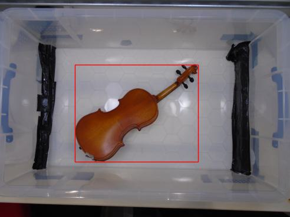
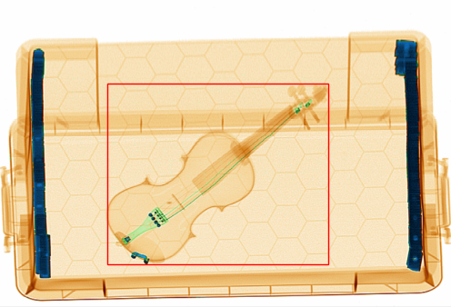
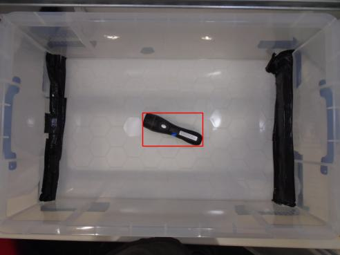
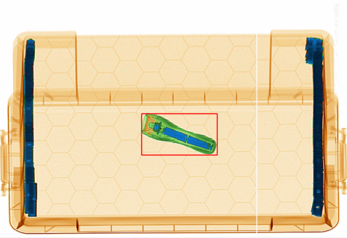
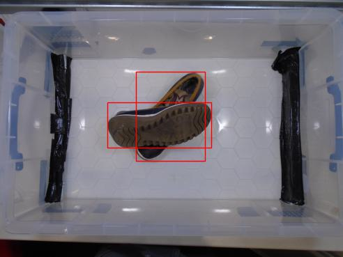
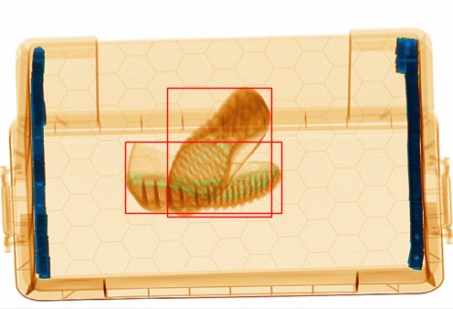
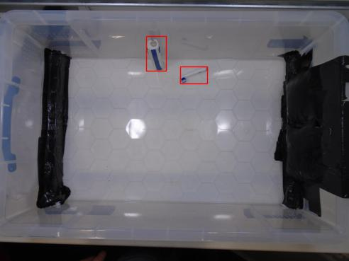
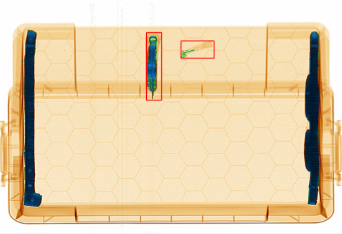
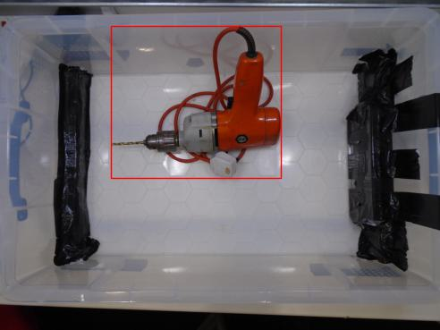
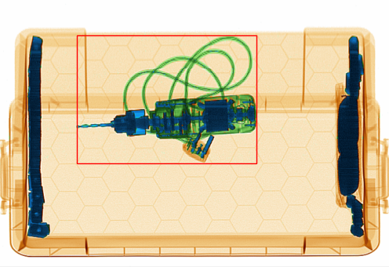
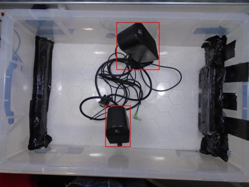
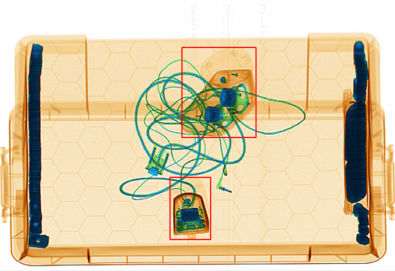
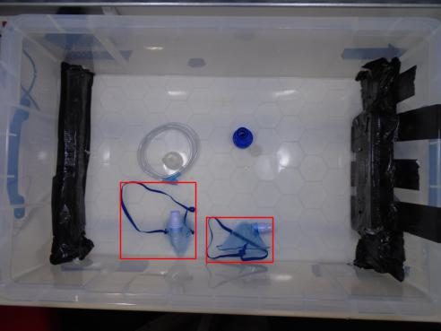
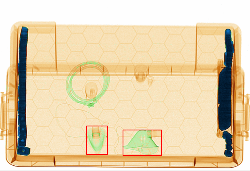
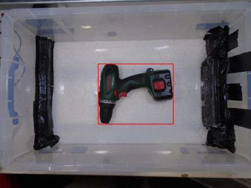
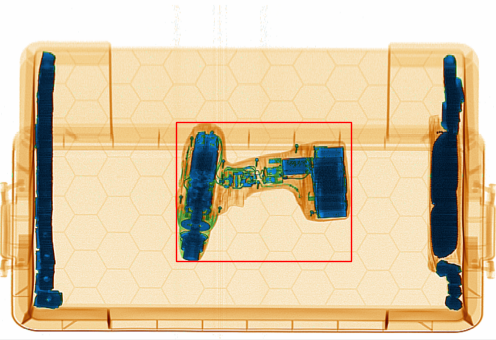
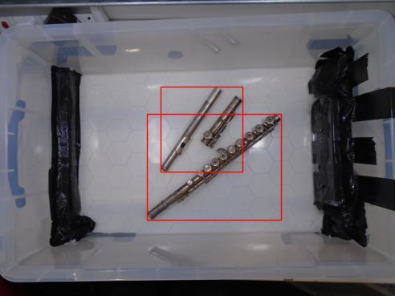
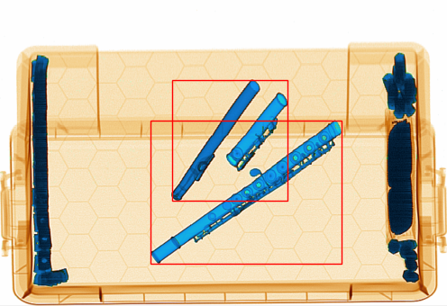
Object detection in security X-ray scans has advanced significantly in recent years. However, evaluating OvOD detectors in this modality remains challenging due to the limited number of annotated object categories in existing X-ray benchmarks. This limitation severely constrains the comprehensive evaluation of OvOD methods, which require a broad and diverse category set to assess generalization to unseen object semantics. To address this gap, we introduce DET-COMPASS, a novel benchmark that repurposes the COMPASS-XP classification dataset for object detection through meticulous bounding box annotation. DET-COMPASS comprises 370 distinct object classes, offering an order-of-magnitude increase in vocabulary size over previous X-ray detection benchmarks. Additionally, it provides pixel-aligned RGB images, ensuring precise spatial correspondence across modalities and facilitating the development of multimodal models. Each object is also labeled with a visibility attribute, indicating whether it produces a discernible signature in the X-ray spectrum.
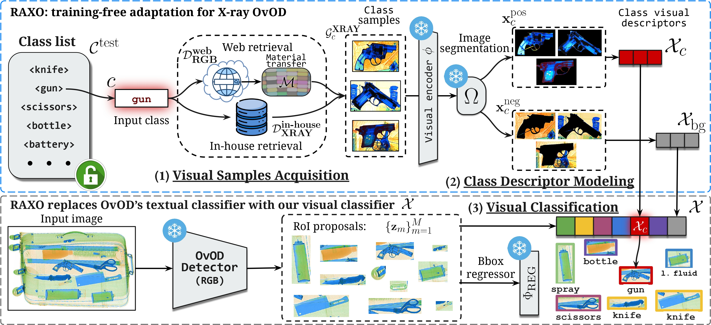
RGB-based open-vocabulary object detectors often fail when applied to X-ray imagery. The core issue lies in the breakdown of alignment between textual and visual features: objects appear significantly different in RGB and X-ray domains, causing text embeddings—originally aligned with RGB features—to misalign with X-ray representations.
RAXO addresses this challenge with a simple and effective three-step process:
Through this pipeline, RAXO enables existing OvOD models to accurately detect objects in X-ray images, leveraging their intrinsic visual characteristics without requiring additional training.
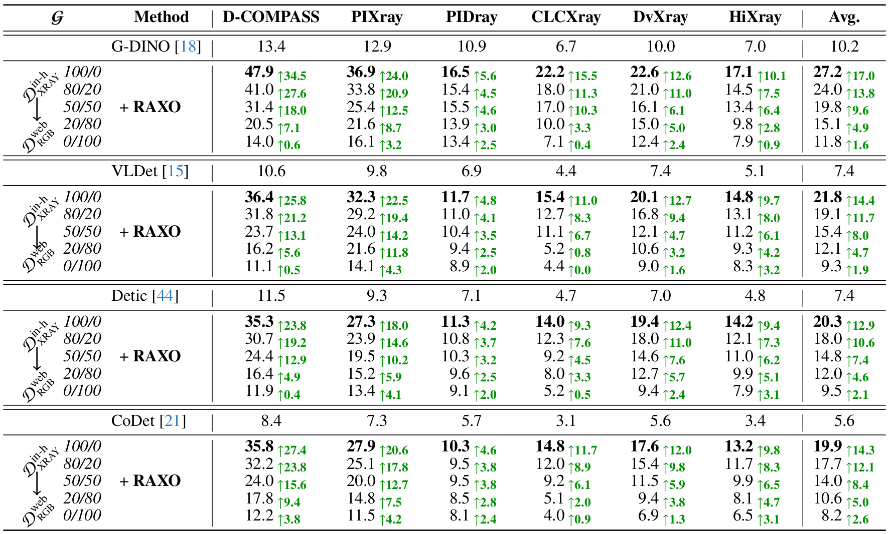
@misc{garcia2025superpowering,
author = {Garcia-Fernandez, Pablo and Vaquero, Lorenzo and Liu, Mingxuan and Xue, Feng and Cores, Daniel and Sebe, Nicu and Mucientes, Manuel and Ricci, Elisa},
title = {Superpowering Open-Vocabulary Object Detectors for X-ray Vision},
year = {2025},
eprint = {arXiv:2503.17071},
}